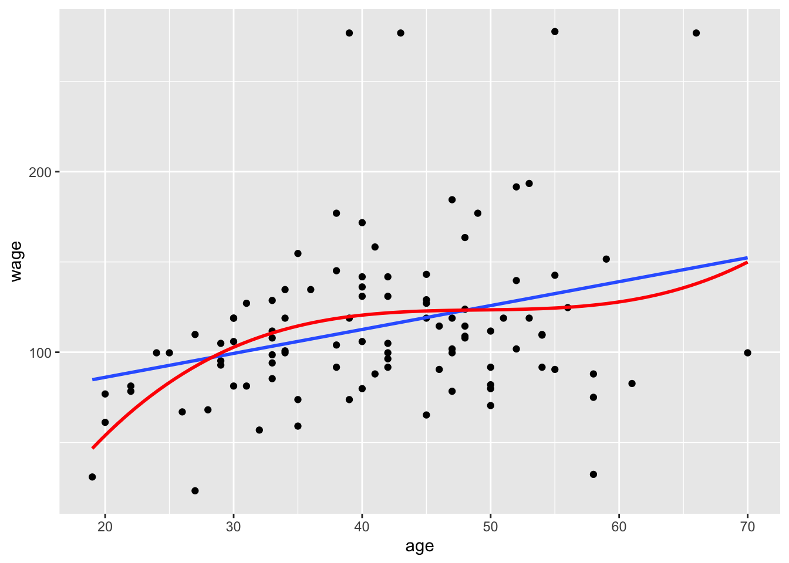

3 An Example
wage_data %>%
tbl_summary()| Characteristic | N = 3,0001 |
|---|---|
| year | |
| 2003 | 513 (17%) |
| 2004 | 485 (16%) |
| 2005 | 447 (15%) |
| 2006 | 392 (13%) |
| 2007 | 386 (13%) |
| 2008 | 388 (13%) |
| 2009 | 389 (13%) |
| age | 42 (34, 51) |
| maritl | |
| 1. Never Married | 648 (22%) |
| 2. Married | 2,074 (69%) |
| 3. Widowed | 19 (0.6%) |
| 4. Divorced | 204 (6.8%) |
| 5. Separated | 55 (1.8%) |
| race | |
| 1. White | 2,480 (83%) |
| 2. Black | 293 (9.8%) |
| 3. Asian | 190 (6.3%) |
| 4. Other | 37 (1.2%) |
| education | |
| 1. < HS Grad | 268 (8.9%) |
| 2. HS Grad | 971 (32%) |
| 3. Some College | 650 (22%) |
| 4. College Grad | 685 (23%) |
| 5. Advanced Degree | 426 (14%) |
| region | |
| 2. Middle Atlantic | 3,000 (100%) |
| jobclass | |
| 1. Industrial | 1,544 (51%) |
| 2. Information | 1,456 (49%) |
| health | |
| 1. <=Good | 858 (29%) |
| 2. >=Very Good | 2,142 (71%) |
| health_ins | |
| 1. Yes | 2,083 (69%) |
| 2. No | 917 (31%) |
| logwage | 4.65 (4.45, 4.86) |
| wage | 105 (85, 129) |
| 1 n (%); Median (IQR) | |
wage_data %>%
sample_n(size = 100) %>%
ggplot() +
aes( x = age, y = wage) +
geom_point() +
geom_smooth(method = 'lm',
se = FALSE) +
geom_smooth(method = 'lm',
se = FALSE,
formula = y ~ poly(x, degree = 3),
col = 'red') 